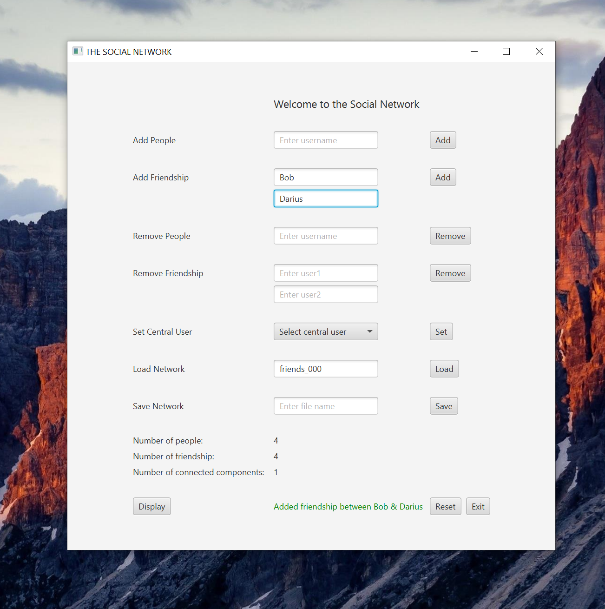
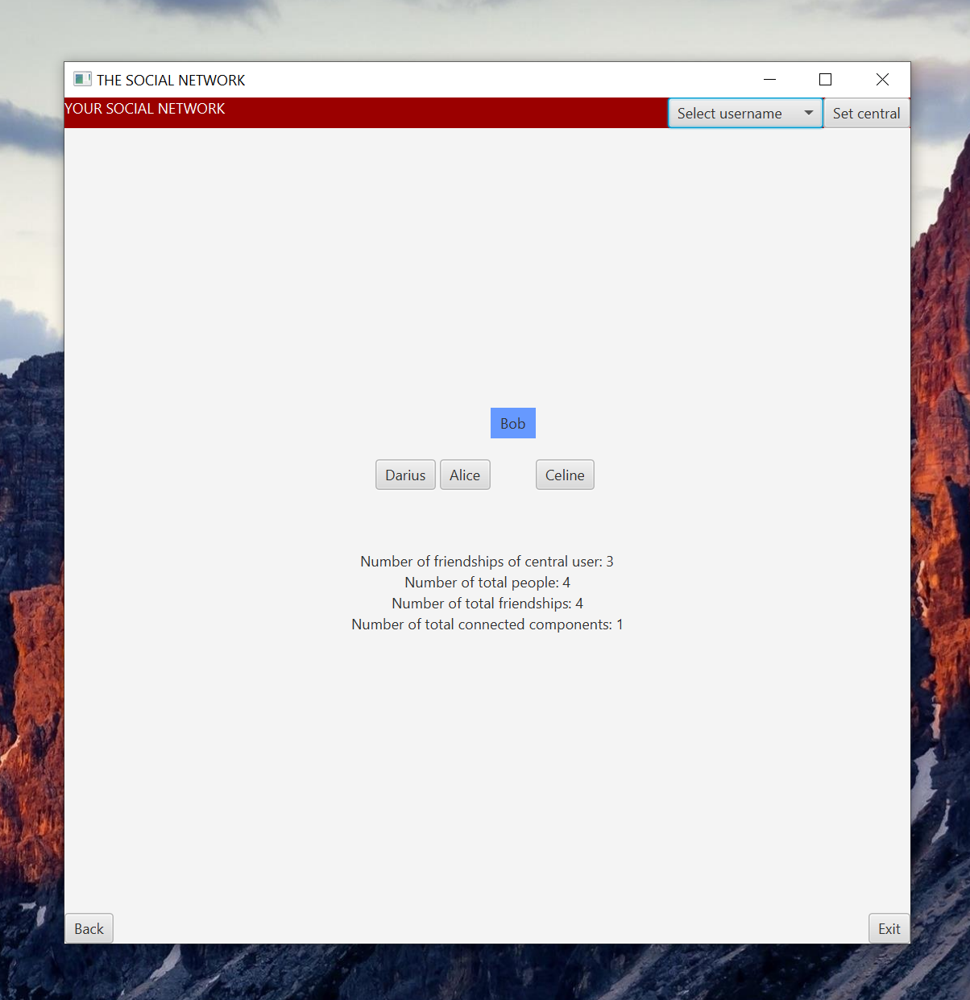

As part of CS 400 - Programming III class, I am assigned, with my teammates, a project to visualize connections between people (nodes) in a network (graph).
My task was to implement back end GraphADT, planning ahead with my teammates that abstract data types and related methods that we might need to use. I also implemented the front-end design of the application using JavaFX.
Users can add or remove people to the network, add or remove connections (or edge) between two nodes, load pre-existing social network and save current social network to their local machine.
After that, the user can choose a particular node in the graph, and see all its neigbor nodes. The neigboring nodes shown in the screenshot below are also clickable, hence users are able to view the connection of related users as well.
This project was designed specifically for the mastery of graph data structure as part of our data structure course.
Inplemented graph concepts used in this project includes:
Due to course policy, the project will not be open sourced.
You can contact me at sgoh4@wisc.edu